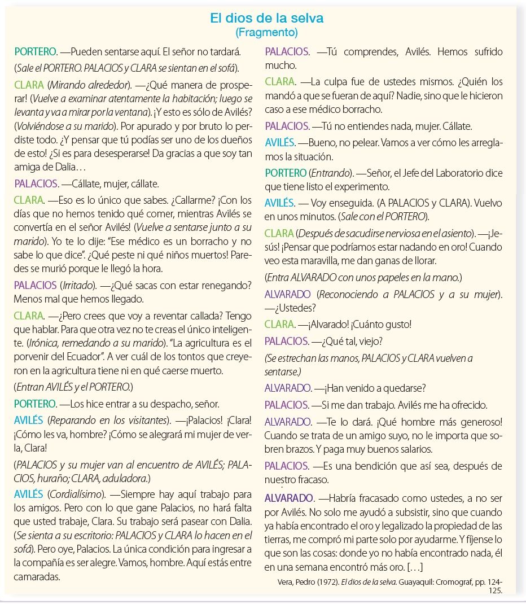
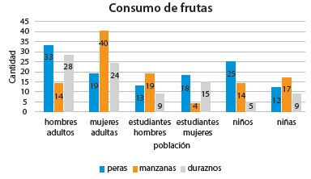

Exploro para recordar
Alumno:
Exploro para recordar
Alumno:
1. Lee con atención el texto y completa lo pedido.

2. Señala tres rasgos del fragmento que evidencien que la obra pertenece al teatro social ecuatoriano. (3 pts.)
3. Menciona los cinco elementos que pueden alterar el mensaje en el proceso comunicativo.? (1 pts.)
4. Lee las siguientes expresiones y determina el tipo de alteración presente en el mensaje. (0,5 pts.)
| Al que madruga Dios lo ayuda, pero no por mucho madrugar amanece más temprano. | |
| Barcelona ganó a Delfín en su cancha. |
5. A partir de tu análisis del siguiente gráfico, responde las preguntas: (0,5 pts.)
¿Qué frutas consume más los hombres y cuáles más, las mujeres?

¿Qué frutas consume más los hombres y cuáles más, las mujeres?
6. Imagina que el gráfico fue elaborado por una institución nutricionall. ¿A que conclusiones podrían llegar a partir de la información presentada? Redáctala a continuación. (0,5 pts.)
7. Menciona una característica de los mapas mentales. (0,5 pts.)
8. Escribe una de las pautas para elaborar mapas mentales. (0,5 pts.)
9. Escribe una oración con cada una de las siguientes frases. (1 pts.)
| Frase | Tipo | Oración |
| Preposicional | En contra de | |
| Adverbial | demasiado tarde | |
| Verbal | cayó en cuenta de que |
10. Escribe una oración con cada una de las siguientes clases de palabras. (1,5 pts.)
| Frase | Tipo |
| Un hiperónimo y tres hipónimos | |
| Dos hormónas | |
| Dos parónimos | |
| Dos homógrafas |
11. ¿Qué género literario tiene la cultura azteca que no posee la maya? (0,50 pts.)
12. ¿En qué temática de los géneros literarios coinciden mayas y aztecas?. (0,5 pts.)